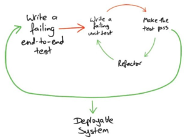

Тест на минимальную функциональность (в идеале строка, атомарная операция, одно условие, один вызов метода)
Запуск теста, который должен упасть (даже по причине отсутствия метода)
Реализация
Реализация
Цель сделать чтобы тест проходил минимально возможным способом
(30 секунд)
Рефакторинг
Рефакторинг реализации
На соответствие правилам кода проекта, оптимизация решения
Рефакторинг теста
Проверить что названия тестовых методов отражает смысл проверки
Удалить лишние, повторяющиеся тест кейсы
Законы
Законы
В проде не должно быть кода, который не чинит сломанные тесты
Каждый класс должен иметь набор тестов, а каждый публичный метод свой тест
Плюсы и минусы подхода
Плюсы
Понятны критерии прохождения теста и завершения задачи
Быстрая обратная связь - сразу видно где проблема
Быстрее написание кода - понятен следующий шаг, шаги маленькие
Высокое покрытие, уверенность в коде
Чистый лист, понятно с чего начать, готовая методология написания кода
Чистый код, за счет тестируемости - SOLID
Проще и понятнее рефакторинг
Еще плюсы
Тесты и рефакторинг включены в стоимость решения задачи, пока пишешь тест - думаешь над результатом реализации
Меньше техдолг
Сразу видны недостатки в требованиях
Готовое описание работы класса для того кто собирается его использовать. Ревью можно делать начиная с чтения тестов
Сначала думаешь, потом пишешь код
Минусы
Непривычно думать наоборот
Хрупкость, нужно часто править тесты, т.к. они будут меняться за архитектурой
Нужно поддерживать моки
На практике не учитывается клиентский код и конфигурация - тесты могут проходить но проект не будет рабочим
Еще минусы
Бывает что легко добавить одну строку в тестируемый метод, например для обработки эксепшена или null, а тест на этот случай писать долго и велик соблазн сразу добавить строку
Не всегда подходит если требования спускаются в виде сложного, уже готового алгоритма
Подробнее про минусы
Думать наоборот
Окупается при вырабатывании привычки
Хрупкость
Барьер для излишнего усложнения архитектуры, ее доказанная оправданность
Моки
Есть библиотеки для их генерации
Моки это хорошее минимальное описание поведения внешннго сервиса, при их анализе можно заметить ошибки проектирования и лучше понять поведение
Не учитывается клиентский код
Кроме юнитов, необходим иной слой тестов - end to end, приемочные, которые тоже можно рассмотреть в цикле bdd->tdd

Легко добавить одну строку
Проблема в том что если строка не была покрыта, то содержит потенциальный баг - неверное поведение, условие, или является избыточной
Не всегда подходит для алгоритмов
Частично решается разбиением алгоритма на тестируемые части